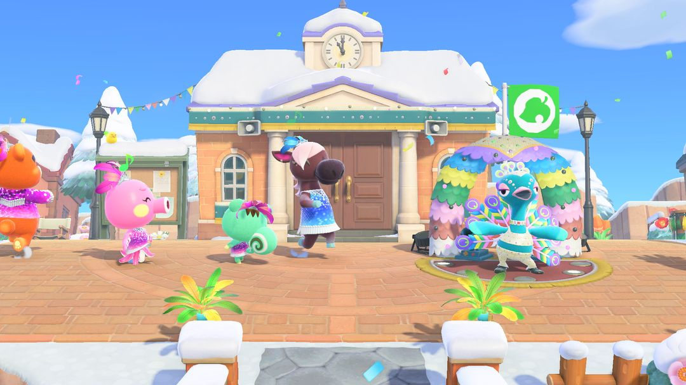
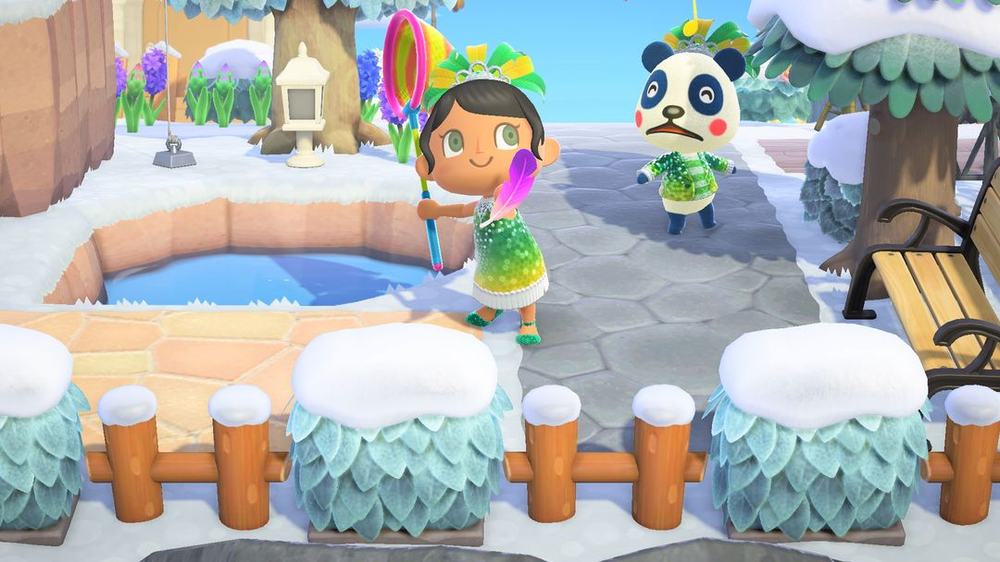
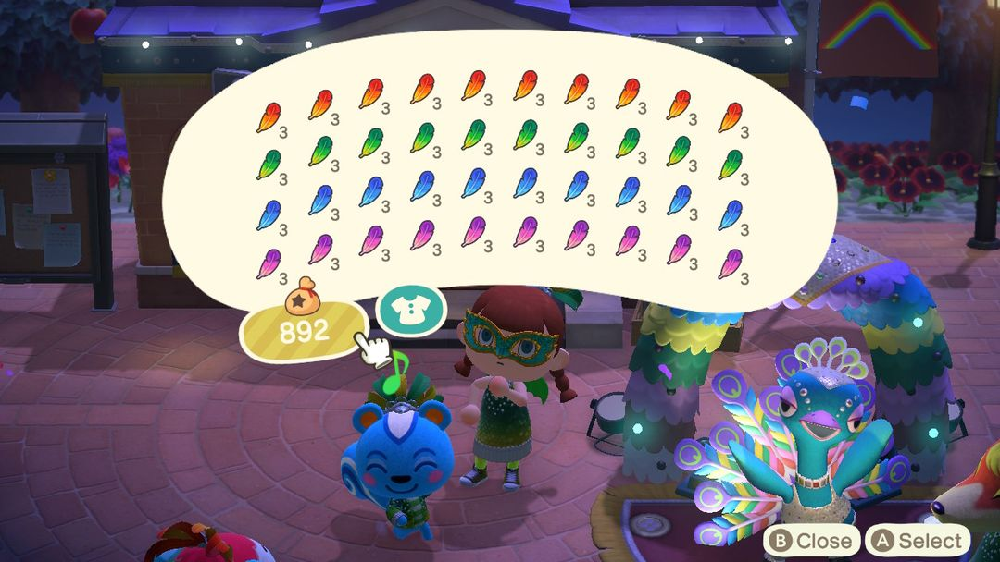
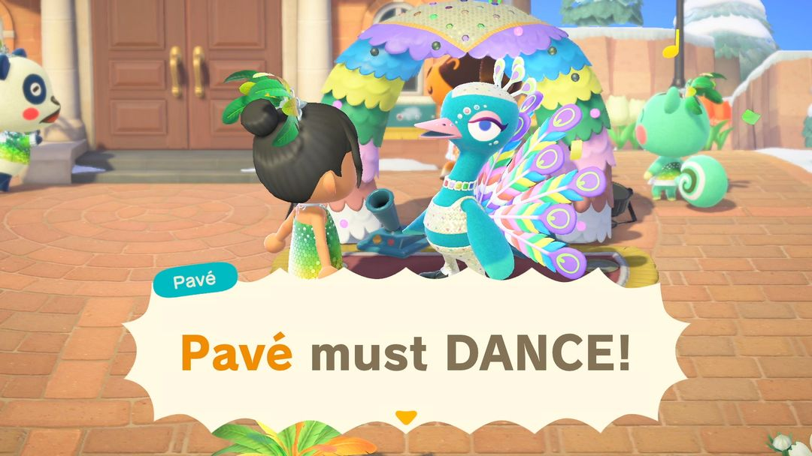

Festivale: catch feathers, trade them to Pavé for furniture
One day only, on a Monday in February or March
Festivale lasts just one day a year, on a Monday in February or March, and it's the same date in both hemispheres. Pavé the peacock dances in the plaza all day while colorful feathers drift down from the sky. Catch them with your net and bring them to him to get Festivale furniture. Trade enough times and you'll also get the Festivale float, which only Pavé hands out.
The event is mostly about catching and turning in feathers, so there isn't much to prep. That said, Nook's Cranny starts stocking Festivale furniture on February 1, and Able Sisters puts out Festivale clothing too. Buy what you want ahead of time so you can focus on feathers on the day. And don't forget your net!

The plaza on Festivale: Pavé dances in front of Resident Services while villagers show off their feathered outfits (Image: Nintendo, via Nookipedia)
01When it happens
Festivale's date follows Easter: it's the Monday 48 days before Easter, which is the Monday before Ash Wednesday in real life. Since Easter moves around every year, so does Festivale, landing somewhere in February or March. Both hemispheres get the same date.
A few days beforehand, a notice goes up on the bulletin board outside Resident Services. You can join in from morning to night, but it's only that one day — miss it and you'll be waiting another year. To check the exact date, open the Event Calendar in Nook Circle.
02Who's there and where
The host is Pavé, the dancing peacock, who spends the whole day in the plaza in front of Resident Services. Your villagers put on Festivale costumes and tank dresses and dance all over the island while confetti fills the air.
Feathers float down from the sky too, in four colors: red, blue, green, and purple. Every so often you'll spot a rainbow feather. One swing of your net is all it takes to catch one.

Feathers drift down from the sky — catch them with your net (Image: Nintendo, via Nookipedia)
03How trading works
It only takes four steps:
· Step 1: Talk to Pavé. He'll ask for 3 feathers of a specific color and give you the DIY recipe for the rainbow feather.
· Step 2: Catch feathers all over the island. Feathers of the same color stack up to 3 per slot; rainbow feathers don't stack, so each one takes up its own slot.
· Step 3: Bring the feathers back. Either 3 of the same color or 1 rainbow feather gets you a piece of Festivale furniture. The furniture comes in the color of the feathers you hand over, so turn in whichever color you want.
· Step 4: After 9 trades, Pavé asks for 3 rainbow feathers instead. Give them to him and you'll get the Festivale float. Then the cycle starts over — 9 furniture trades, then 3 rainbow feathers for a float — as many times as you like.
You can also craft rainbow feathers yourself: 1 red, 1 blue, 1 green, and 1 purple at a workbench. Once you've got a full set of all four colors, it's better to just make a rainbow feather than wait for one to fall, and save it for the float.

Pockets stuffed with feathers in all four colors, plus rainbow feathers (Image: Nookipedia)
Heads upAs long as you have a rainbow feather in your pockets, Pavé will take that first, even if you're also carrying 3 of the same color. If you want furniture in a specific color, put your rainbow feathers in storage before you hand over the matching feathers.
04What you can get
Pavé hands out Festivale furniture at random, but you can also buy it at Nook's Cranny (from February 1). Here are the shop prices. The float at the bottom isn't sold in stores:
| Item | Nook's Cranny price (Bells) |
| Festivale stage | 6,000 |
| Festivale confetti machine | 5,000 |
| Festivale balloon lamp | 4,000 |
| Festivale garland | 4,000 |
| Festivale stall | 3,000 |
| Festivale parasol | 2,500 |
| Festivale drum | 2,100 |
| Festivale lamp | 1,500 |
| Festivale flag | 1,300 |
| Festivale float | Pavé only |
Since Pavé's furniture is random, if there's one piece that just won't show up, it's less hassle to buy it at the shop. If you're after a specific color, trade in feathers of that color.
Clothing is sold at Able Sisters: the Festivale costume and Festivale tank dress are 2,600 Bells each, and the Festivale accessory is 2,240 Bells. Nook's Cranny also sells the Viva Festivale Reaction Set, which teaches you 4 new reactions: Feelin' It, Let's Go, Viva, and Confetti.
05Feather-catching tips
Listen for them. When a feather is floating off-screen, you'll hear a whistling sound that gets louder as you get closer. With headphones on, you can even tell whether it's to your left or right.
Don't wander off or go inside. If you run too far away, or step into a building and come back out, nearby feathers may disappear. Missing with your net is fine, though — a feather won't vanish just because you whiffed. Just swing again.
Trade with villagers for missing colors. Villagers will walk up and offer to swap 1 to 3 feathers for a different color. Perfect for when you have extras of one color and are one short of another.
Buy the furniture early. Nook's Cranny sells Festivale furniture from February 1 through the day before the event, so you won't need to run to the shop on the day and can focus on catching feathers.

After you hand over feathers, Pavé busts out a dance before giving you your prize (Image: Nintendo, via Nookipedia)
06Version history
Festivale was added in the 1.7.0 update in 2021. Starting with 1.9.0, the Festivale drum can be placed on tables. Neither the 2.0 nor the 3.0 patch notes mention any changes to how Festivale works.
Nook Circle · Search "Nook Circle" on the App Store